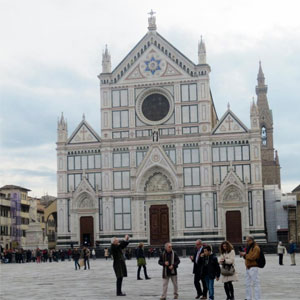
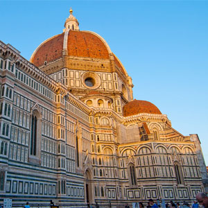
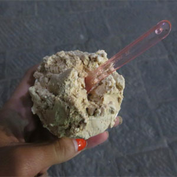
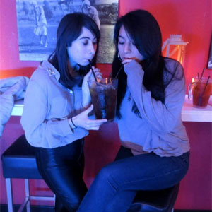
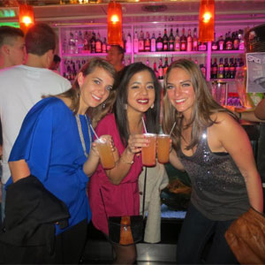

An American in Paris
Florence, Italy
I visited Florence for my best friend from high school's 21st birthday. She was there studying abroad for the semester also. Florence is a beautiful city in Northern Italy, and a nice alternative to Paris, as it is smaller and Italians love to feed you!
To celebrate my friends birthday, we took a day trip to Chianti for a wine tour.
 Santa Maria Novella
 The Duomo
 Fresh Gelato
 A bar in Florence called "Shots." These pitchers are only 10 euro, and very strong!
 Club Space in Florence where you can find the "Gigi" drink.